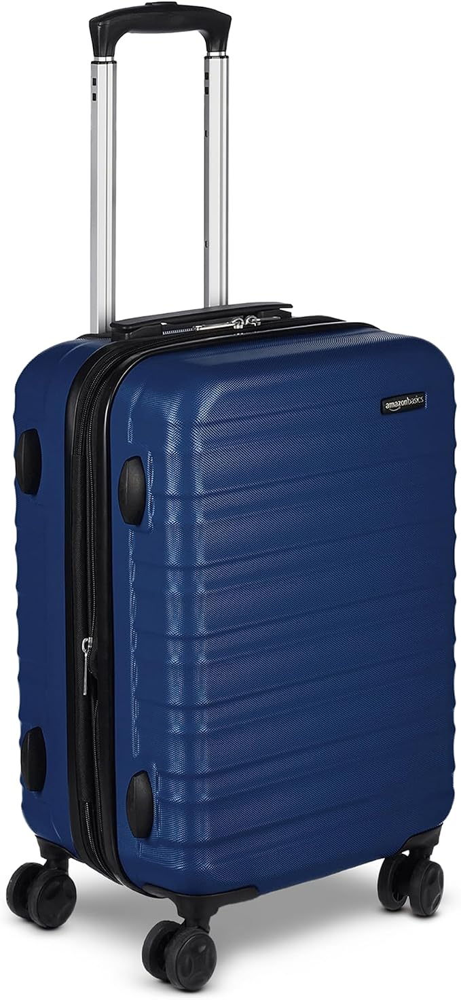

The Same Trip, Two Weeks Later, For Half the Price
The expensive mistake is treating peak season as the only version of a place worth visiting. Shift the same trip by a week or two either side of the rush, and the weather may change only modestly while availability changes much faster.
The short version
- Shoulder season is usually the week or two either side of peak, when demand drops before the destination changes completely.
- Compare the full booking, including transfers, breakfast and late checkout, because the useful saving may be in what is bundled.
- A morning arrival and a quieter harbour can be part of the same trip, without requiring a different destination.
- Check cancellation terms, transport times and what is included before deciding that a lower headline rate is actually better.
As an Amazon Associate I earn from qualifying purchases. Links below are affiliate links (#ad) - they cost you nothing extra. Nothing here is a paid placement, and no brand sees this page before it goes up.
Move the date before you move the destination
A late-September or late-October break can preserve the same harbour, hotel and basic itinerary while demand falls away. Think in a narrow window first: compare the peak date with a date 7 to 14 days earlier or later, rather than jumping straight to a different month and accepting a different holiday.
Weather is not the only variable worth watching. A few degrees can change what you pack, but a sharp change in availability can alter which rooms, transfers and meal arrangements are still being sold together, so compare the complete booking rather than the room line alone.


The bundle can be worth more than the discount
A lower room rate is not automatically a lower trip cost if you then pay separately for a transfer, breakfast or a late checkout that was included on another date. Put every included item in one list and compare like with like before booking; otherwise a headline saving can disappear into add-ons.
The same logic applies to short stays. If a two-night stay makes the dates work without forcing an awkward connection or an extra transport leg, it can be worth comparing even when the nightly rate does not look remarkable. Do not stretch a cheap-looking itinerary across a 06:00 departure if the saving comes at the cost of a difficult journey.
Check the practical details before you shift the dates
Check the last bus, not the first. Getting there is rarely the problem; an arrival after 22:00 can turn a seemingly simple transfer into a taxi journey, so check the final scheduled service for your actual arrival date.
Check the whole package, not the room rate. Write down whether breakfast, transfers and late checkout are included on both dates, then compare the same list rather than two different offers.
Check the weather window, not the calendar label. If you are moving only 7 to 14 days, compare the actual forecast and your planned activities rather than assuming a new season has started on a particular date.
What we would actually buy
 Our illustration of the general look, not the actual place
Our illustration of the general look, not the actual placeShoulder-season resort packages
These solve the problem of comparing the whole trip rather than chasing a room rate alone, because the useful difference can sit in what the package includes. Check the exact inclusions for transfers, breakfast and late checkout before booking, and compare them with the peak-date offer. They are not for travellers who need to choose every component separately or who will not use the included extras.
Best for: Flexible travellers seeking quieter resorts
Shop shoulder-season stays →paid link Our illustration of the general look, not the actual stay
Our illustration of the general look, not the actual stayTwo-night stays worth splitting the trip for
A two-night stay can make a date shift practical when a longer booking would force inconvenient transport or leave you paying for nights you do not need. Check the arrival and departure times and whether the short stay fits your transport plan before treating it as a saving. It is not for travellers who would spend most of those two nights travelling between stops.
Best for: Travellers who enjoy breaking up longer journeys
Find two-night stays →paid link
Compression packing cubes
These help when a shoulder-season trip needs a smaller, more organised bag because the packing list can include layers rather than one uniform set of warm-weather clothes. Check that the cubes fit the luggage you already use and that you actually benefit from compressing clothing before buying them. They are not for travellers who pack very lightly or whose existing luggage already keeps clothing organised.
Best for: Travellers trying to fit more into hand luggage
Shop cubes on Amazon →paid link
Hardside cabin case
A hardside cabin case is useful when shifting dates means travelling with a compact cabin-sized bag and keeping the trip simple. Check the case against your carrier's current cabin-bag rules before buying, because the relevant limits depend on the journey rather than the destination. It is not for travellers who need to carry more than their cabin allowance permits.
Best for: Light packers who want a sturdy cabin case
Shop cases on Amazon →paid linkIf you only do one thing
First, price the same destination 7 to 14 days either side of your original date, then compare the complete package line by line. Only after that should you decide whether the quieter version of the same trip is worth booking.
How we choose
We look for pieces that change how a small room works, not the cheapest option and not the most photographed one. Everything here has to survive a rental: no drilling, no permanent fittings, nothing that needs a second person to install.
Room images on this site are our own illustrations, not photographs of the products. We link to the retailer so you can see the real item.
Written and selected by Rooms and Roads · Updated August 2026 · links checked August 2026